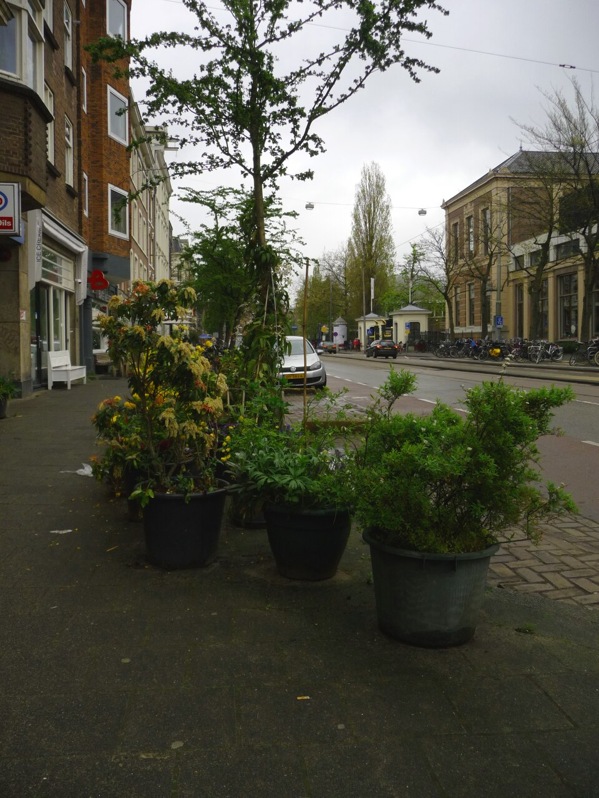
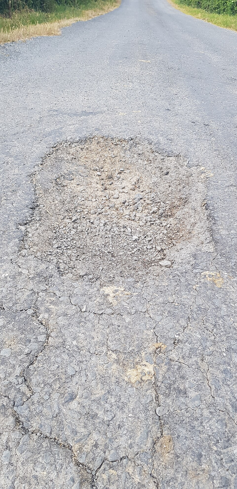
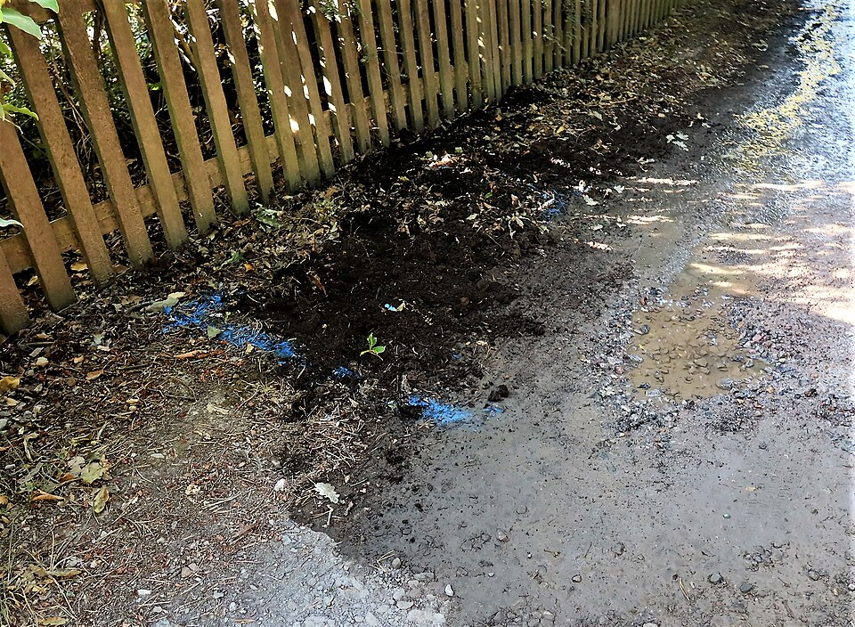
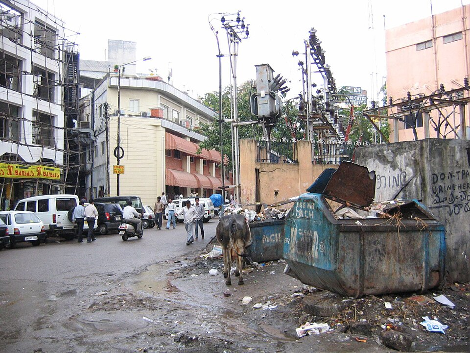

A clearer view of your neighborhood
Better streets begin with being heard.
CityWatch brings local infrastructure concerns into one place, so neighbors can document what needs attention and follow the path toward a fix.

Illustrative neighborhood street · sample experience
This is a demonstration feed. Sample reports, names, counts, and status updates are not live municipal data.
03reports in this sample feed
01sample report marked resolved
42sample community confirmations
Community reports · sample content
See what needs attention
Browse sample neighborhood reports and add your confirmation.

Illustrative image · sample report
In Progress
Roads
High Impact
Sample report · 2 Oct 2024
Large pothole on Maple Avenue
A deep pothole is making this intersection difficult to navigate,
especially for cyclists and evening commuters.

Illustrative image · sample report
Pending
Water
High Impact
Sample report · 2 Oct 2024
Water main leak near community garden
Water has been pooling along the footpath since early this morning.
The area is becoming slippery for pedestrians.

Illustrative image · sample report
Resolved
Waste
High Impact
Yesterday
Overflowing recycling bins at Central Park
The recycling bins were overflowing over the weekend. Thank you to
the sanitation team for the quick cleanup.
No issues found
Try adjusting your filter or search query to find matching items.